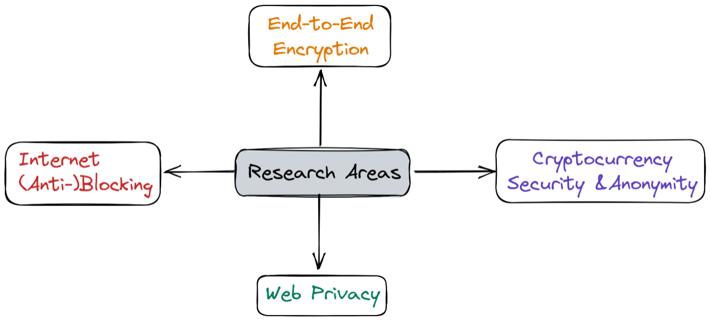

Prospective Students
JOIN THE GROUPI am looking for motivated people to pursue a PhD, internship, or (under)graduate thesis in networks and security research. Please take a moment to understand my working philosophy before writing in — with subject "Looking for (PhD / Internship / (Under)graduate thesis) opportunity."
रसरी आवत जात ते सिल पर परत निसान ||
- This mantra will help you navigate five years as a PhD scholar, and — if academia is your path — the rest of your career.
- If you believe in the power of hard work and persistence, we can work together.
- I strongly value honest, genuine effort. In research there are no shortcuts — the process is simple, but hard to practice: try, try, and try again.
- There's a real difference between mastery goals and outcome goals. If you're inclined toward mastery, you're welcome to apply.
- You won't be alone in the journey — your advisor is with you, but in a supportive role. Your research is your own story.
- The one quality you must have is a habit of constructive inquiry. In the words of George Carlin…
Research thrust areas

I work at the intersection of networks, security and privacy, across the four broad areas shown above. To know more about them, read about my research thrust areas. And if you feel motivated enough to work with me, let me try to demotivate you once more: here's the bread-and-butter of a PhD — publish or perish. Competitive venues in this field typically accept fewer than 20% of submissions. They often have "out-of-the-world" research expectations, so rejection is the norm and acceptance the anomaly.
Target venues — Security
IEEE S&P (Oakland), CCS, NDSS, USENIX Security, PoPETS, AsiaCCS, ACSAC, ESORICS, EuroS&P
Target venues — Networks & Measurement
ACM SIGCOMM, IEEE INFOCOM, ACM IMC, CoNEXT, PAM, TMA, WWW
A world-class PhD typically means three to four solid papers at these venues — five years is not "too much time" for that bar. You'll be the lead on your own work, ideally running two problems in parallel by your late second or third year, and I will try my best to give you solid supporting actors (master's, undergrad and intern students) working with you under my direction. I encourage a genuinely collaborative environment, including international peers — though how well that works depends heavily on your approach to research, your ability to lead a team (and handle its tantrums), and navigating differing time zones. These are just some pointers; many more factors come into play in the arduous journey called a PhD.
The harsh rejections and other obstacles may pull you from mastery goals toward outcome goals. The real challenge is to stay with the mastery goals. Also, please read what we expect to see in a thesis proposal (below).
For more context on whether a PhD in systems is right for you, I recommend two excellent posts by Biswabandan Panda (systems faculty, IIT Bombay): "All You've Got Is All It Takes" and "Just Say 'No' to a PhD in Computer Systems".
Thesis Proposal Guidelines
CONSIDER ALL OF THEM- A description of the problem in enough detail to clearly state the thesis proposition (next item).
- A proper, concise thesis proposition. This is not an abstract statement like "we're going to investigate the insider problem", but something along the lines of "our hypothesis is that the use of XYZ technology in environment Z under constraints Q can identify insider attackers with probability Z". Obviously, the fewer qualifiers the better, but you also need to be accurate. Since this is a thesis proposal, we will cut you some slack — but it's in your best interest to think hard about this, since it is the anchor point of your whole thesis (and the next few years' worth of work for you).
- A description of the related work, how it does not solve the problem, and how your hypothesis has not been tested before.
- Preliminary results (if any) that indicate you have reason to believe the hypothesis holds.
- Additional experiments that you will run to prove that the hypothesis holds.
- What you'll need to build to run said experiments (and what you've already built).
- What happens if you can't run some of these experiments, or if they give you "bad" results — what's your failover?
- The expected contributions, keeping in mind that each major contribution must demonstrate novelty, non-triviality, and usefulness ("first", "best", "only" are good adjectives here).
- How long you expect all this to take.